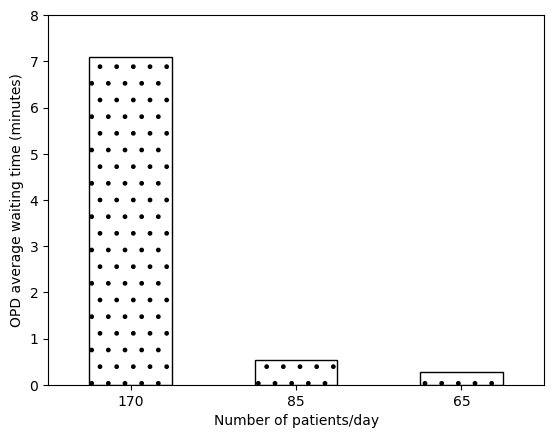

Table 6 100 rep, and created Figure 2A-D. Total time used: TBCh TBCm (TBC%)
6.55-6.57: Run 100 replications for Table 6
Start running with 100 replications. Taking too long (ran through 259 replications in 110 minutes), so only got through 2 full configurations before needing to shut it down to go to work.
9.26-9.50, 10.50-10.51: Used parallel processing when running the replications
Set up parallel processing in reproduce_tab6.ipynb to run the 4 sets of 100 replications. It took 61 minutes to run (excluded from timing). Once complete, I looked over the table and was satisified that the mean and SD values were close enough to the original, and considered it now completely successfully reproduced (at timestamp: 10.51). I disregarded some high percent change that were simply due to comparison of numbers very close to zero, and the difference was actually very small.
Emailed to Tom and Alison to share second opinion.
Timing for when Table 6 is completed (i.e. as of 10.51):
import syssys.path.append('../')from timings import calculate_times# Minutes used prior to todayused_to_date =829# Times from todaytimes = [ ('6.55', '6.57'), ('9.26', '9.50'), ('10.50', '10.51')]calculate_times(used_to_date, times)
Time spent today: 27m, or 0h 27m
Total used to date: 856m, or 14h 16m
Time remaining: 1544m, or 25h 44m
Used 35.7% of 40 hours max
11.04-11.17: Saved output from processed replications, and confirmation from Tom and Alison
Edited notebook so model is not re-run each time (due to long run time), and then saved the processed results to a csv file.
Both Tom and Alison responded to confirm they were happy this was reproduced.
Re-ran % change calculations with rounded values. As before, observe that we are sometimes comparing very small numbers - so e.g. mean of 0.011 v.s. 0.012 comes out as 9% change. It also sometimes finds large differences for small SD values (e.g. 1360% change), when actually, I’m not too concerned by the difference in the grand scheme of things.
11.30-11.50: Create Figure 2B
Imported and processed data from the arrival number replications, and produced Figure 2B. Happy that this is succesfully reproduced at timepoint 11.50. In order to declare this reproduced, I feel I do not require to run the same number of replications (100), as understand this would have no meaningful impact on result being plot (mean), and am happy with consistency to original at 10 replications.
# Minutes used prior to this figureused_to_date =856# Times from todaytimes = [ ('11.04', '11.17'), ('11.30', '11.50')]calculate_times(used_to_date, times)
Time spent today: 33m, or 0h 33m
Total used to date: 889m, or 14h 49m
Time remaining: 1511m, or 25h 11m
Used 37.0% of 40 hours max
11.51-12.08, 12.13-12.17: Create Figure 2C
Using OPD Q wt (which matched up to OPD queue waiting time for Table 6), results look rather different. They only go up to 0.01, whilst in Figure 2C, results go from under 1 up to just under 7. That is closer to the waiting time in the benchmark model, implying these results are obtained with those doctor numbers.
Incorrect reproduction of Fig2c
When run with the serv5 appointment times, the results match up with the paper. Feel this has been succesfully reproduced at time 12.17.

Successful reproduction of Fig2c
Observation: Reproduced figure, but not from how I understood it had been set up from the text (unless that was my misunderstanding - which is quite possible!).
# Minutes used prior to this figureused_to_date =889# Times from todaytimes = [ ('11.51', '12.08'), ('12.13', '12.17')]calculate_times(used_to_date, times)
Time spent today: 21m, or 0h 21m
Total used to date: 910m, or 15h 10m
Time remaining: 1490m, or 24h 50m
Used 37.9% of 40 hours max
Emailed to Tom and Alison - and Tom confirmed that Fig2B and 2C are succesful.
Reflections from Tom from these reproductions
Including code to (re)generate figures
Including tick marks on axes so that people can easily read across or judge whether a bar goes above a Y value or not
13.20-13.26: Add grid lines to figures
Add horizontal grid lines to Figures 2B and 2C, to improve readability.
13.29-13.44, 13.47-14.04, 14.13-14.19, 14.24-14.41: Working on Figure 2A
The text and figures do not provide the boundary used when sampling the consultation time. From previous implementations we know:
Mean 0.87 uses boundaries 0.3/0.5
Mean 5 uses boundary 2
However, we do not know for mean 2.5. We might reasonably estimate that it would be around 1, but this is a guess and not substantiated by evidence.
Ran all nine combinations set up with parallel processing but only 10 replications, run time 3m 22s.
Created Figure 2A, and - despite guessing for the 2.5 (0.5) boundaries - I feel the bar heights are sufficiently similar to mark this as successfully reproduced at 14.41.
# Minutes used prior to this figureused_to_date =910# Times from todaytimes = [ ('13.20', '13.26'), ('13.29', '13.44'), ('13.47', '14.04'), ('14.13', '14.19'), ('14.24', '14.41')]calculate_times(used_to_date, times)
Time spent today: 61m, or 1h 1m
Total used to date: 971m, or 16h 11m
Time remaining: 1429m, or 23h 49m
Used 40.5% of 40 hours max
14.44-14.54: Creating Figure 2D
Produced Figure 2D using same data and similar code to Figure 2A.
Again, feel sufficiently similar to mark as successfully reproduced at 14.54.
# Minutes used prior to this figureused_to_date =971# Times from todaytimes = [ ('14.44', '14.54')]calculate_times(used_to_date, times)
Time spent today: 10m, or 0h 10m
Total used to date: 981m, or 16h 21m
Time remaining: 1419m, or 23h 39m
Used 40.9% of 40 hours max
15.10-15.21, 15.24-15.34: Creating Figure 3A
Based scenarios on the labels for Figure 3. These were varying:
Number of inpatient/childbirth/ANC cases per day:
1 = IAT 1440 (e.g. like IPD cases for config1)
2 = IAT 720 (as 2880 is 0.5 per day and 1440 is 1 per day)
Average service time for outpatients:
0.87 (0.21) (same as config1)
2.5 (0.5) (as in figure 2)
Set up and ran 10 replications with parallel processing. Took 3 minutes.
Adapted code created for Figure 2A/D to make Figure 3A. Successfully reproduced at 15.34.
# Minutes used prior to this figureused_to_date =981# Times from todaytimes = [ ('15.10', '15.21'), ('15.24', '15.34')]calculate_times(used_to_date, times)
Time spent today: 21m, or 0h 21m
Total used to date: 1002m, or 16h 42m
Time remaining: 1398m, or 23h 18m
Used 41.8% of 40 hours max
15.45-15.51: Creating Figure 3B
Successfully reproduced at 15.51.
# Minutes used prior to this figureused_to_date =1002# Times from todaytimes = [ ('15.45', '15.51')]calculate_times(used_to_date, times)
Time spent today: 6m, or 0h 6m
Total used to date: 1008m, or 16h 48m
Time remaining: 1392m, or 23h 12m
Used 42.0% of 40 hours max
15.53-15.54: Creating Figure 3C
Successfully reproduced at 15.54.
# Minutes used prior to this figureused_to_date =1008# Times from todaytimes = [ ('15.53', '15.54')]calculate_times(used_to_date, times)
Time spent today: 1m, or 0h 1m
Total used to date: 1009m, or 16h 49m
Time remaining: 1391m, or 23h 11m
Used 42.0% of 40 hours max
15.55-15.58: Creating Figure 3D
Successfully reproduced at 15.58.
# Minutes used prior to this figureused_to_date =1009# Times from todaytimes = [ ('15.55', '15.58')]calculate_times(used_to_date, times)
Time spent today: 3m, or 0h 3m
Total used to date: 1012m, or 16h 52m
Time remaining: 1388m, or 23h 8m
Used 42.2% of 40 hours max